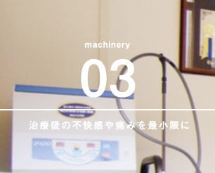

- HOME
- 宝歯会について
宝歯会についてAbout
医療法人宝歯会は、福岡県北九州市を中心に山口県、広島県、岡山県、兵庫県にて19の歯科医院を運営する歯科医療グループです。歯科医療技術、接遇のすべてにおいて、「患者様第一」を徹底的に追求し、スタッフ皆と協力しながら、患者様、地域の皆様に貢献できる歯科医院を目指しています。
ミッション
「患者様と永く、スタッフ皆と永く、地域の皆様と深く永くお付き合いできる。」
そんな歯科医療グループを創造する。
ビジョン
「歯科医療業界のベンチマークになる。」
宝歯会グループの考える良い仕事とは
- 患者様が喜ぶ
- スタッフが働き甲斐を感じる
- 工夫する・・・少しでも痛くない治療、少しでも早く、少しでも安く、など
そして、そのために我々は実践します。
理念（院訓）
- 一、明るく元気で大きな声で挨拶します。・・・当たり前のことを徹底的に実践します。
- 一、日本一きれいな病院を目指します。・・・患者様にまた来院していただきたいということを伝えます。
- 、治療は詳しい説明の後に行います。・・・「正直・丁寧・真面目」を徹底します。
宝歯会には理念（行動規範）となる院訓があります
-
明るく元気で大きな声で挨拶します
挨拶はコミュニケーションの根幹をなすとても大切な行為であり、挨拶の基本は笑顔です。明るい笑顔で元気よく大きな声で挨拶することは、患者様を元気にすることができ、診療しやすい環境にもつながると確信しています。
当法人は患者様に対して、心を込めて明るい表情で元気に大きな声で挨拶することによって、ご来院時に「来院していただきありがとうございます」という感謝の気持ちを表し、診療後は「お疲れ様でした。また来院していただきたいです」という素直な気持ちを表現しています。
-
日本一きれいな病院を目指します
院内の整理整頓は、患者様にもう一度来ていただきたいという気持ちのあらわれです。患者様の目線に立ってきれいであるかどうかをチェックし、清掃や整理整頓を行うことが重要だと当法人は考えます。
当法人では、毎日スタッフ全員で、院内と院外の清掃を行っています。これは、患者様に衛生的で気持ちの良い環境でお過ごしいただくという目的だけでなく、スタッフ自身の清潔・衛生に対する気付きの感度を上げる目的もあるのです。また、「日本一、生花の多い歯科医院」を目指し、院外・院内に美しい花々を飾る独自の取り組みも行っています。
-
治療は詳しい説明の後に行います
歯科医療の携わる私たちの最大の財産は患者様との信頼関係です。患者様と良好な関係を築くためには、詳しい病状説明・治療説明は欠かせません。
当法人では、患者様に病状説明・治療説明はもちろん、歯科に関わるあらゆる情報を積極的にお伝えし、十分にご理解・ご納得をいただいた上で治療を開始することを徹底しています。また、寝たきりの患者様などに対する訪問歯科診療も提供していますが、まだまだ認知度が低いため、こちらも積極的な情報発信を行っています。
マインド
医療従事者としての大前提
歯科医療に従事する医療人である前に、社会人としての自覚と責任を持つこと。これは、宝歯会で勤務する歯科医師や医療スタッフの最重要項目です。
「社会人として当たり前のことを当たり前にやる。徹底的にやる」。具体的には、挨拶をきちんとする、毎日掃除をきちんとするといったことです。礼節や良識をきちんとわきまえた上で、基本に忠実に行動していくことが医療従事者としてもっとも重要だと当法人は考えます。
すべては患者様からの評価が大切であり、当たり前のことを実践することが、医療従事者として一番大切な真摯な姿勢につながると考えています。当たり前の行動が伴わなければ、それは最新・最高の医療とはいえません。当法人もまだまだ十分ではありませんが、今後も徹底を図ってまいります。
宝歯会のロゴマークについて
「なぜゾウさんのロゴマークなんですか？」とよく尋ねられます。このゾウさんは、当法人の梶原理事長が幼い頃に亡き父と一緒に行った唯一の場所、到津動物園で見たゾウがモチーフです。父と見たゾウの記憶は今でも鮮明に残っているため、モチーフとして採用しました。今考えると、ゾウは自分達の仲間と永く過ごすことから「家族愛」を象徴する動物でもあります。それは私たち宝歯会の理念である、「患者様と永く、スタッフ皆と永く、地域の皆様と深く永くお付き合いしたい」という思いへつながっています。
グループ概要
| 法人名 | 医療法人宝歯会 |
|---|---|
| 法人本部所在地 | 〒808-0005 福岡県北九州市若松区下原町1-1 |
| 設立 | 1994年（平成6年） |
| 代表者 | 理事長 梶原 浩喜 |
| グループ医院 |
かじわら歯科小児歯科医院
ひまわり歯科医院 古賀スマイル歯科小児歯科医院 苅田スマイル歯科小児歯科医院 伊都スマイル歯科小児歯科医院 穂波ひまわり歯科小児歯科医院 筑紫野スマイル歯科小児歯科医院 愛宕浜スマイル歯科小児歯科医院 小郡スマイル歯科小児歯科医院 行橋スマイル歯科小児歯科医院 新宮スマイル歯科小児歯科医院 乙金スマイル歯科小児歯科医院 あやらぎスマイル歯科小児歯科医院 小野田スマイル歯科小児歯科医院 周南スマイル歯科小児歯科医院 広島祗園スマイル歯科小児歯科医院 廿日市スマイル歯科小児歯科医院 岡山スマイル歯科小児歯科医院 神戸南スマイル歯科小児歯科医院 |
| 関連会社・関連施設 | 株式会社スマイル・ラボ 株式会社スマイルサポート 若松本部 小倉事務所 宝歯会グループ研修施設 研修センター（ひまわり歯科併設） 宝歯会グループ小倉研修センター |

宝歯会の沿革
| 1992年 | 北九州市若松区に「かじわら歯科小児歯科医院」開院 |
|---|---|
| 1999年 | 訪問歯科診療の開始 |
| 2002年11月 | 「かじわら歯科小児歯科医院」移転開院（現在地） |
| 2003年5月 | 北九州市若松区に「ひまわり歯科医院」開院 |
| 2004年12月 | 福岡県古賀市に「古賀スマイル歯科小児歯科医院」開院 |
| 2005年11月 | 山口県下関市に「あやらぎスマイル歯科小児歯科医院」開院 |
| 2006年5月 | 福岡市西区に「伊都スマイル歯科小児歯科医院」開院 |
| 2006年 | 国立鹿児島大学歯学部、公立九州歯科大学、国立長崎大学歯学部、国立北海道大学歯学部の臨床研修施設に認定される |
| 2007年 | 私立北海道医療大学歯学部、私立日本大学松戸歯学部の臨床研修施設に認定される |
| 2007年04月 | 福岡県飯塚市に「穂波ひまわり歯科小児歯科医院」開院 |
| 2008年05月 | 福岡県京都郡苅田町に「苅田スマイル歯科小児歯科医院」開院 |
| 2008年05月 | 山口県山陽小野田市に「小野田スマイル歯科小児歯科医院」開院 |
| 2008年09月 | 「株式会社スマイルサポート」設立 |
| 2008年12月 | 福岡県筑紫野市に「筑紫野スマイル歯科小児歯科医院」開院 |
| 2009年03月 | 「株式会社スマイルサポート戸畑事務所」設立 |
| 2009年04月 | 広島市安佐南区に「広島祇園スマイル歯科小児歯科医院」開院 |
| 2009年10月 | 「株式会社スマイル・ラボ」設立 |
| 2012年05月 | 福岡市西区に「愛宕浜スマイル歯科小児歯科医院」開院 |
| 2013年11月 | 福岡県小郡市に「小郡スマイル歯科小児歯科医院」開院 |
| 2014年07月 | 福岡県行橋市に「⾏橋スマイル歯科小児歯科医院」開院 |
| 2014年11月 | 岡山県岡山市北区に「岡山スマイル歯科小児歯科医院」開院 |
| 2014年12月 | 「株式会社スマイルサポート戸畑事務所」移転のため閉鎖 |
| 2015年3月 | 北九州市小倉北区に「医療法人宝歯会宝歯会グループ小倉研修センター（併設 株式会社スマイルサポート小倉事務所）」開設 |
| 2015年6月 | 広島県廿日市市に「廿日市スマイル歯科小児歯科医院」開院 |
| 2016年9月 | 山口県周南市に「周南スマイル歯科小児歯科医院」開院 |
| 2017年9月 | 兵庫県神戸市に「神戸南スマイル歯科小児歯科医院 」開院 |
| 2017年10月 | 島根県出雲市に「出雲スマイル歯科小児歯科医院」開院 |
| 2018年4月 | 福岡県大野城市に「乙金スマイル歯科小児歯科医院」開院 |
宝歯会の取り組みについて
医療法人宝歯会は、「患者様と永く、スタッフ皆と永く、地域の皆様と深く永くお付き合いできる。」医療法人を目指し、歯科医療のプロフェッショナルによる高度かつ幅広い歯科診療の提供、最新鋭の設備完備、スタッフ教育の徹底、地域貢献活動など様々な取り組みを行っています。
患者様と永くお付き合いする
当法人の最大の幸せは、患者様に信頼され、永くお付き合いすることです。そして、患者様の最大の希望も、信頼でき永く通える歯科医院を持つことだと考えています。
当法人では、開業以来、患者様の声に最大限に耳を傾けながら、患者様とともに歩んでまいりました。そして、保有する専門知識・技術を最大限に発揮し、質の高い歯科医療サービスを提供するとともに、信頼関係構築の基礎となる情報提供を徹底的に行ってまいりました。その歩みの中で得た患者様、そして地域の皆様との信頼こそが、当法人の最大の財産だと考えています。当法人では、今まで以上に患者様はもちろん地域の皆様と深くお付き合いをしていけるよう努めてまいります。
歯科医療のプロフェッショナルがチームで対応します。
医療法人宝歯会は、歯科医師を中心とした歯科医療を提供する部門、歯科技工士が歯科補綴物を製作する部門・スマイル・ラボ、歯科医院の運営・マネジメントを担当する事務部門・スマイルサポートの3つの部門から成り立ちます。医療スタッフが歯科治療に専念できるような環境を整えることで、医療スタッフは自身の専門スキルを活かしたパフォーマンスを生き生きと発揮でき、それが患者様により良い医療の提供につながると考えています。
幅広い歯科診療を提供しています
-
小児歯科診療
お子様の時期から、お口の健康に関心を持ち、自ら口腔管理ができる習慣を身に付けることは、小児歯科診療の大きなテーマです。お子様が歯科医療と通じて楽しい人生を送れよう、サポートしてまいります。「早く歯医者さんに行きたい！」と言ってもらえるような、お子様が前向きに通いたくなる小児歯科診療を提供していきたいと考えています。
-
一般歯科診療
虫歯や歯周病の治療、歯を失ってしまった際の治療をはじめ審美治療、再生治療にも取り組んでいます。当法人では、患者様1人1人の口腔内の状況を詳細に説明した上で、ご理解・ご納得いただいた上で治療を進めています。
-
訪問歯科診療
専門の歯科医師・歯科衛生士・看護師などが、外出が困難な方や病気やけがの方の個人宅や病院、介護施設などにお伺いし歯科診療を行う訪問歯科診療に対応しています。訪問歯科診療では、一般歯科治療はもちろん口腔ケア・口腔リハビリ・口腔衛生指導なども行います。
最高のサービスを提供するための、最新鋭の設備を完備しています
-
コーンビーム型歯科用CT導入
当法人は、三次元のコーンビーム型CTを北九州市で最初に導入しています。CTを採用することで、治療の安全性・スピードが大幅に向上し、リスクを低減させることが可能です。インプラント治療はもちろん神経に隣接した抜歯、さらに再生療法・審美医療など幅広い治療に採用しています。
-
ウォーターレーザー
水分子に光（レーザー）のエネルギーを与えて患部に照射し、虫歯や歯周病の治療ができる最新のレーザーを導入しています。麻酔やドリルを使うことがないため、身体的・精神的なダメージを減らすことができ、短時間で痛みのない治療が可能です。インプラント治療、外科治療、再生療法などで採用しています。
-

早期回復を促すPRP法
PRP（Platelet Rich Plasma）とは、血小板を凝縮した血漿（血液の液体成分）の名称です。インプラント治療や歯周病の外科的治療の際に用いることで、治療後の不快感や痛みを軽減。従来、傷口の回復に7日間ほどかかっていたものが3～4日に短縮でき、早期回復が期待できます。
スタッフ皆と永くお付き合いする
当法人はスタッフ皆が仕事を永く続けられるよう、以下のサポートを行っています。
1.働き甲斐
入社時の研修で、当法人が望むスタッフとしての考え方・行動などを徹底的にお伝えしています。それを実践することにより、確実に患者様から「ありがとう」と感謝の言葉をいただく経験が増えていきます。患者様からの感謝の言葉は、スタッフの大きな働き甲斐です。スタッフ皆の働き甲斐が高まるよう、考え方・行動を徹底的に教育します。
2.経済面
当法人はスタッフ皆に経済的な安定を保証します。
3.教育の機会
患者様に良い治療を提供するために、最新の技術や考え方を学ぶ機会、自分自身が幸せになるために人間としての正しい考え方を学ぶ機会を提供します。
また、当法人で働く意義や働き甲斐を深めてもらえるよう、充実した研修制度を整備。スタッフ同士の交流促進のため、親睦会補助金制度も設けています。
地域の皆様と深く永くお付き合いする
宝歯会の歯科医院が地域にあることを地域の皆様が誇りに思う。そのような歯科医院を設立していくことが当法人の使命だと考えています。その一環として、フラワープロジェクトを立ち上げ活動しています。
フラワープロジェクト
当法人が運営する19の歯科医院では、医院の建物周りや道沿いに大きな花壇を配置。院内にも多くの生花を飾り、日本一、生花が多い歯科医院を目指しています。これは、患者様や近隣の方に心地よく穏やかな気持ちになっていただきたいという思いからはじめた取り組みです。また、ご来院いただいた患者様への感謝の気持ちと、またご来院いただきたいという素直な気持ち、近隣の皆様への感謝の気持ちのあらわれです。